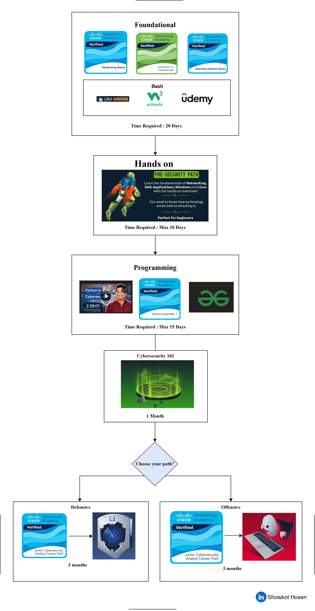
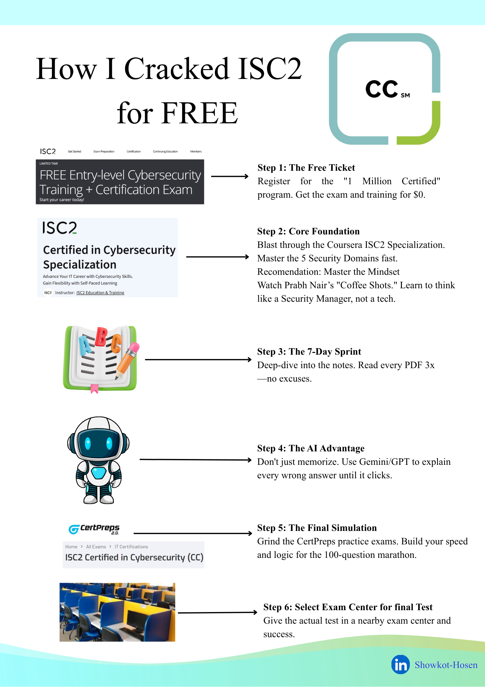

SHOWKOT HOSEN

XAI in Cybersecurity Enthusiast and ML Based Cyber Defence Creator
ABOUT ME
Research-driven Cybersecurity professional with a focus on ML-based intrusion prevention and XAI-powered forensics. I hold a strong academic record (3.63 CGPA) and a portfolio of international publications focusing on satellite imagery detection and interpretable deep learning. My expertise is validated by industry-standard credentials, including Cisco Ethical Hacker and (ISC)² Certified in Cybersecurity (CC), alongside proficiency in Python, Scikit-learn, and advanced network analysis tools. Beyond research, I lead mentorship programs at CUET, fostering a culture of innovation in cybersecurity R&D. I am now seeking a PhD opportunity to solve critical transparency gaps in automated security systems.
EDUCATION
BSc in Electronics and Telecommunication Engineering
Chittagong University of Engineering and Technology (CUET)
2022 – Present | CGPA: 3.63
HSC in Science
Government City College, Chittagong
2018 – 2020
SKILLS SUMMARY
- Cybersecurity (Ethical Hacking, CTF)
- Machine Learning (Python, Scikit-learn)
- Deep Learning (CNN, XAI, SHAP)
- Research (IEEE Format, LaTeX)
- Intrusion Detection Systems (IDS/IPS)
- Network Security & Forensics
- Operating Systems (Linux/Windows)
- Content Creation (YouTube/Canva)
PUBLICATIONS
Interpretable SQL Injection Detection: Lightweight Decision Trees with SHAP-Enhanced Deployment
2026 IEEE 2nd International Conference on QPAIN | Author: Showkot Hosen
XAI-Powered Vision: Making CNN Malware Classifier Transparent for Cybersecurity
2026 IEEE 2nd International Conference on QPAIN | Author: Showkot Hosen
Aircraft Detection in Satellite Images Using CNN and Sliding Window Method
2025 International Conference on ECCE | Author: Showkot Hosen
EXPERIENCES
Cybersecurity Research Student
CUET
Hands-on research on IDS/IPS and ML-based cyber defense systems. Participation in national CTF competitions and OSINT investigations.
Cyberhunt - Cybersecurity Mentorship Lead
CUET | 2025 – Present
Mentoring junior students in the fields of Cybersecurity and Machine Learning research. Organizing workshops on ethical hacking foundations.
Industrial Visit - BSCL (Bangabandhu Satellite City)
Focused on satellite communication infrastructure, signal monitoring, and ground station security protocols.
KEY CERTIFICATIONS
Cybersecurity

(ISC)² Certified in Cybersecurity (CC) Passed

(ISC)² CC Specialization from Coursera

THM Advent of Cyber 2025

THM Pre Security Path

Cisco Ethical Hacker

Penetration Testing, Threat Hunting, and Cryptography Specialist
Machine Learning

Introduction to AI for Cybersecurity

ML and Emerging Tech in Cybersecurity
Python & Others

EDGE Python Professional Certification

Cisco Networking Academy: 22+ Badges Gained
PROJECTS
SEC-IoT Industrial IoT Monitoring
Built with Flask + Scikit-learn to detect anomalies in industrial sensors.
MLWAF - ML Powered Firewall
Real-time SQL injection and XSS detection using Machine Learning models.
Text Steganography Detection
Deep Learning based covert data defense using LSB and linguistic analysis.
Malware Analysis: Chrome Extensions
Dynamic and static analysis of malicious browser extensions.
Quranic Shots: E-Commerce
Full-stack web site (PHP/JavaScript) for digital Islamic content.
Infrared Communication System
Hardware project using IR modules for short-range wireless data transfer.
COMMUNITY CONTRIBUTION
I am passionate about sharing knowledge and mentoring. Below are two of my strategic GitHub roadmaps for the community:

Complete Cybersecurity Roadmap
A strategic guide designed for beginners to build solid foundations in networking, ethical hacking, and system security.
GitHub Resource
(ISC)² CC Preparation Roadmap
Leveraging my status as an (ISC)² Certified professional, I developed this guide to help peers master "Security Principles" and "Incident Response".
GitHub ResourceCO-CURRICULAR ACTIVITIES
Organizer of Stealth Flags (Televerse 1.0)
Organized and managed a national-level cybersecurity CTF competition on the CTFd platform. Focused on vulnerability analysis and defensive security.
Competitions & Participation
- Machine Learning Competition: BUET DL Sprint 4.0
- Capture The Flag (CTF): BCS CTF and UAP CTF